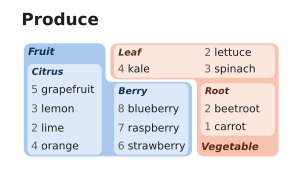

Metrics
def Metrics(
font:str, size:float, cw:float, ch:float, dx:dict, dy:dict, pad_l:float, pad_r:float, num_w:float=0.0,
gap:float=0.0, item_style:object='normal', header_style:str='italic'
)->None:plot function.
Each group, at every depth, is drawn as one flat-coloured, rounded rectilinear shape holding its header and its names. Top-level groups get distinct hues, chosen so that neighbouring groups never share one; nested groups are lighter shades of their parent’s hue, so a subgroup reads as a pale panel set into its parent.
Headers are told apart from names without relying on the names’ own typography, since gene and protein names follow different case and italic rules in different organisms:
An item may carry a numeral, drawn in grey before its name and right-aligned in its own column so that digits line up.
prepare measures every name and header label in the font, and decides:
max_span) its label needs on one line side by side (wide), and its line breaks when stacked one per cell down a column (tall). The layout then chooses which shape fits where. A label too long for max_span cells is shortened with an ellipsis.Nested shapes are inset more from the sides (dx) than from above and below (dy), so groups side by side are clearly separate while stacked groups sit close, which keeps rows short.
Measure names and headers; set every group’s header shape; return the sizes for drawing.
item_style is the names’ slant: “normal”, “italic”, or a function item -> "normal" | "italic". header_style is “normal”, “italic” or “opposite” (the opposite of most names’ slant). hyphenate=True lets long header words break at dictionary points (needs pyphen).
A group’s shape is the union of its cells (computed on the exact integer grid, since unions of fractional boxes can leave hairline slits), shrunk by dx at the sides and dy above and below, then rounded: inner corners as far as the group’s own cells allow, so neighbours never overlap, and outer corners no more than half the thinnest part, so a one-cell stub is never erased.
Draw lay as a matplotlib Figure, and save it to out (.png, .pdf or .svg) if given.
plot: a table in, a treemap outplot takes one row per item: a column naming the item, one column per level of grouping (top level first), and optionally a column of numerals. The table can be a pandas DataFrame, a list of dicts, or a path to a CSV, TSV or Excel file.
def plot(
data, levels, name:str, numeral:str | None=None, labels:dict | None=None, out:NoneType=None, title:str='',
subtitle:str='', note:str='', min_group:int=1, last:tuple=(), item_style:str='normal',
header_style:str='opposite', font:str='DejaVu Sans', fontsize:float=7.0, hyphenate:bool=False,
target_aspect:float=1.6, dpi:int=220
)->itemiset.treemap.layout.Layout:Draw an itemized treemap of data: one row per item, grouped by the levels columns (top level first).
name is the column of item names and numeral an optional column drawn before each name. labels maps group names to shorter header text (use “0ad”, a soft hyphen, to mark where a word may break). Returns the Layout; its figure is .fig.
A small example: fruit and vegetables, by kind, with a price as the numeral. A layout shows its figure when it is the last thing in a notebook cell:
produce = [dict(kind="Fruit", sub="Citrus", item="lemon", price=3), dict(kind="Fruit", sub="Citrus", item="lime", price=2),
dict(kind="Fruit", sub="Citrus", item="orange", price=4), dict(kind="Fruit", sub="Citrus", item="grapefruit", price=5),
dict(kind="Fruit", sub="Berry", item="strawberry", price=6), dict(kind="Fruit", sub="Berry", item="blueberry", price=8),
dict(kind="Fruit", sub="Berry", item="raspberry", price=7),
dict(kind="Vegetable", sub="Root", item="carrot", price=1), dict(kind="Vegetable", sub="Root", item="beetroot", price=2),
dict(kind="Vegetable", sub="Leaf", item="spinach", price=3), dict(kind="Vegetable", sub="Leaf", item="lettuce", price=2),
dict(kind="Vegetable", sub="Leaf", item="kale", price=4)]
lay = plot(produce, levels=["kind", "sub"], name="item", numeral="price", title="Produce")
lay
Output format follows the file extension. In SVG and PDF the names stay as editable text:
The names’ slant can be set for all names, or per name with a function; headers take the opposite slant unless told otherwise:
M = prepare(build_tree([(("A",), Item("dnaK"))]), item_style="italic")
test_eq(M.header_style, "normal")
M = prepare(build_tree([(("A",), Item("dnaK")), (("A",), Item("sll0430")), (("A",), Item("groL"))]),
item_style=lambda it: "normal" if it.name.startswith("s") else "italic")
test_eq(M.header_style, "normal") # most names are italic
test_eq(M.style_of(Item("sll0430")), "normal")
M = prepare(build_tree([(("A",), Item("DDX6"))]), header_style="normal")
test_eq(M.header_style, "normal")
test_fail(lambda: prepare(build_tree([(("A",), Item("x"))]), header_style="bold"), contains="header_style")Numerals take their own column only when some item has one; integral floats print without “.0”:
A header label too long for one cell takes two or three; one too long even for three is shortened:
root = build_tree([(("Ribosomal proteins: synthesis and modification", "x"), Item("rplA")),
(("Ribosomal proteins: synthesis and modification", "y"), Item("rplB")),
(("CNOT", "z"), Item("CNOT1")), (("CNOT", "w"), Item("CNOT2"))])
M = prepare(root)
by_name = {g.name: g for g in root.children}
long, short = by_name["Ribosomal proteins: synthesis and modification"], by_name["CNOT"]
test_eq(short.header_span, 1)
test_eq(long.header_span, 3)
assert long.header_wide.endswith("…")Mistakes in the table are reported: